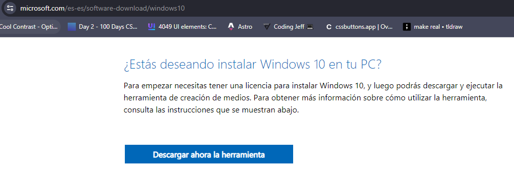
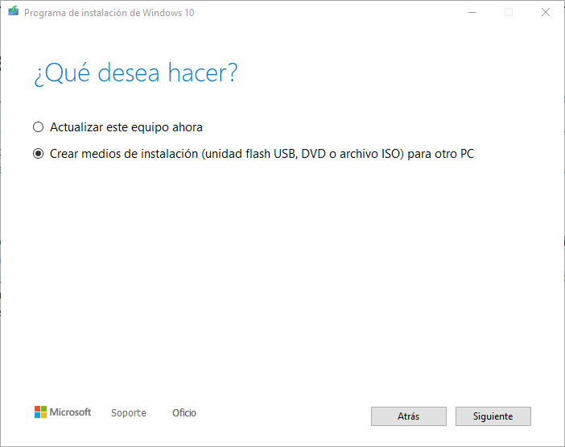

Descarga de ISO.
Para empezar con la virtualización de una "máquina", lo primero que
debemos hacer como en todos los sistemas es descargar la imagen del
sistema operativo para instalarla en el equipo (ISO). Para ello
vamos a instalar "Windows 10" y "Ubuntu 22.04"
Vamos a acceder a la pagina web de microsoft
para instalar la herramienta "mediacreationtool.exe".

Al acceder vamos hacia abajo y seleccionamos la opción "Descarga ahora la herramienta".
Abrimos, aceptamos los terminos y condiciones, esperamos
que realice los preparativos pertinentes. Debemos seleccionar
"Crear medios de Instalación (unidad flash USB, DVD o archivo ISO) para otro PC".


Pulsamos en siguiente y seleccionamos las caracteristicas que buscamos (Windows 10 64 bits),
siguiente.
IMPORTANTE debemos seleccionar la segunda opción "Archivo ISO", esto es vital
para obtener la imagen y poder instalarla en VirtualBox.
Ya tenemos las imagenes de los sistemas operativos instaladas, ahora deberemos abrir VirtualBox.
Al abrirlo deberemos acceder a herramientas y debemos de pulsar en "NUEVA". Y empezaremos la configuración


Debemos seleccionar, el nombre que le queremos dar a la maquina, su carpeta de instalacion, la imagen iso que instalamos anteriormente
y pulsamos en siguiente.


Asignamos un nombre de usuario y una contraseña para el usuario del sistema operativo y le asignamos su memoria
y sus procesadores. Ahora debemos crear una particion virtual y asignarle su espacio para que en ese espacio se instale
el sistema operativo. En este caso asginaremos 20GB para que haya espacio de sobra